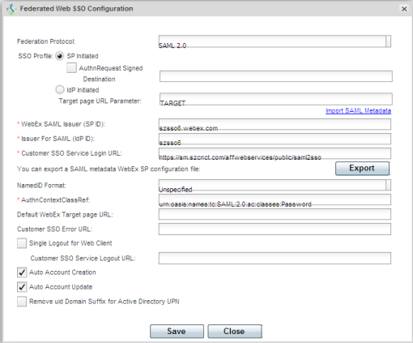

This setup might fail without parameter values that are customized for your organization. Please use the Okta Administrator Dashboard to add an application and view the values that are specific for your organization.
Sign in to the Cisco WebEx Connect Administration Tool .
After successful Login,
Click the Configuration tab to display the System Settings options.
Click Security Settings
Click Federated Web SSO Configuration to display the Federated Web SSO Configuration dialog box.  From the Federation Protocol drop down list, select the federation protocol SAML 2.0 The fields displayed in the Federated Web SSO Configuration dialog box vary based on the selected federation protocol. By default, the configuration fields for SAML 2.0 will be displayed each time the Federated Web SSO Configuration dialog box is opened.
Click Import SAML Metadata to open the Federated Web SSO Configuration - SAML Metadata dialog box.
Click Import and import following metadata file, click on Back to complete the import.
Sign in to Okta Admin app to have this variable generated for you.